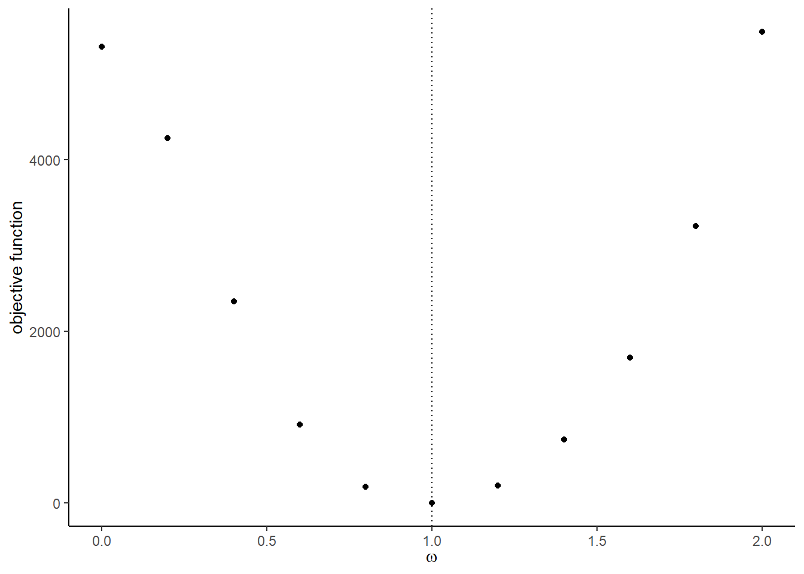
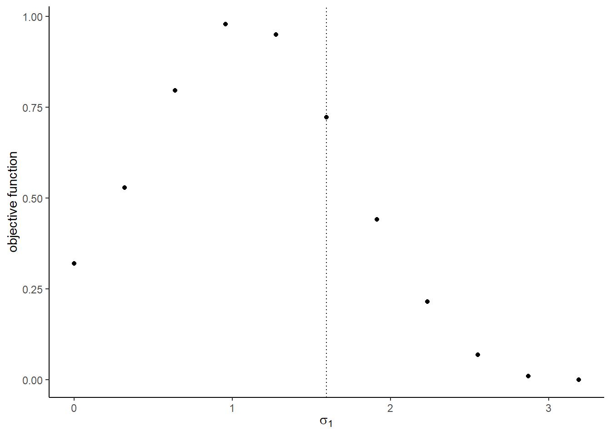

Chapter 14 Assignment 4: Demand Function Estimation II
14.1 Simulate data
Be carefull that some parameters are changed from assignment 3. We simulate data from a discrete choice model that is the same with in assignment 3 except for the existence of unobserved product-specific fixed effects. There are \(T\) markets and each market has \(N\) consumers. There are \(J\) products and the indirect utility of consumer \(i\) in market \(t\) for product \(j\) is: \[ u_{itj} = \beta_{it}' x_j + \alpha_{it} p_{jt} + \xi_{jt} + \epsilon_{ijt}, \] where \(\epsilon_{ijt}\) is an i.i.d. type-I extreme random variable. \(x_j\) is \(K\)-dimensional observed characteristics of the product. \(p_{jt}\) is the retail price of the product in the market.
\(\xi_{jt}\) is product-market specific fixed effect. \(p_{jt}\) can be correlated with \(\xi_{jt}\) but \(x_{jt}\)s are independent of \(\xi_{jt}\). \(j = 0\) is an outside option whose indirect utility is: \[ u_{it0} = \epsilon_{i0t}, \] where \(\epsilon_{i0t}\) is an i.i.d. type-I extreme random variable.
\(\beta_{it}\) and \(\alpha_{it}\) are different across consumers, and they are distributed as: \[ \beta_{itk} = \beta_{0k} + \sigma_k \nu_{itk}, \] \[ \alpha_{it} = - \exp(\mu + \omega \upsilon_{it}) = - \exp(\mu + \frac{\omega^2}{2}) + [- \exp(\mu + \omega \upsilon_{it}) + \exp(\mu + \frac{\omega^2}{2})] \equiv \alpha_0 + \tilde{\alpha}_{it}, \] where \(\nu_{itk}\) for \(k = 1, \cdots, K\) and \(\upsilon_{it}\) are i.i.d. standard normal random variables. \(\alpha_0\) is the mean of \(\alpha_i\) and \(\tilde{\alpha}_i\) is the deviation from the mean.
Given a choice set in the market, \(\mathcal{J}_t \cup \{0\}\), a consumer chooses the alternative that maximizes her utility: \[ q_{ijt} = 1\{u_{ijt} = \max_{k \in \mathcal{J}_t \cup \{0\}} u_{ikt}\}. \] The choice probability of product \(j\) for consumer \(i\) in market \(t\) is: \[ \sigma_{jt}(p_t, x_t, \xi_t) = \mathbb{P}\{u_{ijt} = \max_{k \in \mathcal{J}_t \cup \{0\}} u_{ikt}\}. \]
Suppose that we only observe the share data: \[ s_{jt} = \frac{1}{N} \sum_{i = 1}^N q_{ijt}, \] along with the product-market characteristics \(x_{jt}\) and the retail prices \(p_{jt}\) for \(j \in \mathcal{J}_t \cup \{0\}\) for \(t = 1, \cdots, T\). We do not observe the choice data \(q_{ijt}\) nor shocks \(\xi_{jt}, \nu_{it}, \upsilon_{it}, \epsilon_{ijt}\).
We draw \(\xi_{jt}\) from i.i.d. normal distribution with mean 0 and standard deviation \(\sigma_{\xi}\).
- Set the seed, constants, and parameters of interest as follows.
# set the seed
set.seed(1)
# number of products
J <- 10
# dimension of product characteristics including the intercept
K <- 3
# number of markets
T <- 100
# number of consumers per market
N <- 500
# number of Monte Carlo
L <- 500## [1] 4.0000000 0.1836433 -0.8356286## [1] 1.5952808 0.3295078 0.8204684Generate the covariates as follows.
The product-market characteristics:
\[
x_{j1} = 1, x_{jk} \sim N(0, \sigma_x), k = 2, \cdots, K,
\]
where \(\sigma_x\) is referred to as sd_x in the code.
The product-market-specific unobserved fixed effect:
\[
\xi_{jt} \sim N(0, \sigma_\xi),
\]
where \(\sigma_xi\) is referred to as sd_xi in the code.
The marginal cost of product \(j\) in market \(t\):
\[
c_{jt} \sim \text{logNormal}(0, \sigma_c),
\]
where \(\sigma_c\) is referred to as sd_c in the code.
The retail price:
\[
p_{jt} - c_{jt} \sim \text{logNorm}(\gamma \xi_{jt}, \sigma_p^2),
\]
where \(\gamma\) is referred to as price_xi and \(\sigma_p\) as sd_p in the code. This price is not the equilibrium price. We will revisit this point in a subsequent assignment.
The value of the auxiliary parameters are set as follows:
Xis the data frame such that a row contains the characteristics vector \(x_{j}\) of a product and columns are product index and observed product characteristics. The dimension of the characteristics \(K\) is specified above. Add the row of the outside option whose index is \(0\) and all the characteristics are zero.
# make product characteristics data
X <-
matrix(
sd_x * rnorm(J * (K - 1)),
nrow = J
)
X <-
cbind(
rep(1, J),
X
)
colnames(X) <- paste("x", 1:K, sep = "_")
X <-
data.frame(j = 1:J, X) %>%
tibble::as_tibble()
# add outside option
X <-
rbind(
rep(0, dim(X)[2]),
X
) ## # A tibble: 11 × 4
## j x_1 x_2 x_3
## <dbl> <dbl> <dbl> <dbl>
## 1 0 0 0 0
## 2 1 1 0.975 -0.0324
## 3 2 1 1.48 1.89
## 4 3 1 1.15 1.64
## 5 4 1 -0.611 1.19
## 6 5 1 3.02 1.84
## 7 6 1 0.780 1.56
## 8 7 1 -1.24 0.149
## 9 8 1 -4.43 -3.98
## 10 9 1 2.25 1.24
## 11 10 1 -0.0899 -0.112Mis the data frame such that a row contains the price \(\xi_{jt}\), marginal cost \(c_{jt}\), and price \(p_{jt}\). After generating the variables, drop some products in each market. In this assignment, we drop products in a different way from the last assignment. In order to change the number of available products in each market, for each market, first draw \(J_t\) from a discrete uniform distribution between \(1\) and \(J\). Then, drop products from each market usingdplyr::sample_fracfunction with the realized number of available products. The variation in the available products is important for the identification of the distribution of consumer-level unobserved heterogeneity. Add the row of the outside option to each market whose index is \(0\) and all the variables take value zero.
# make market-product data
M <-
expand.grid(
j = 1:J,
t = 1:T
) %>%
tibble::as_tibble() %>%
dplyr::mutate(
xi = sd_xi * rnorm(J * T),
c = exp(sd_c * rnorm(J * T)),
p = exp(price_xi * xi + sd_p * rnorm(J * T)) + c
)
M <-
M %>%
dplyr::group_by(t) %>%
dplyr::sample_frac(size = purrr::rdunif(1, J) / J) %>%
dplyr::ungroup()## Warning: `rdunif()` was deprecated in purrr 1.0.0.
## This warning is displayed once every 8 hours.
## Call `lifecycle::last_lifecycle_warnings()` to see where this warning was
## generated.# add outside option
outside <-
data.frame(
j = 0,
t = 1:T,
xi = 0,
c = 0,
p = 0
)
M <-
rbind(
M,
outside
) %>%
dplyr::arrange(
t,
j
)## # A tibble: 633 × 5
## j t xi c p
## <dbl> <int> <dbl> <dbl> <dbl>
## 1 0 1 0 0 0
## 2 1 1 -0.0156 0.604 1.58
## 3 4 1 0.0418 1.30 2.35
## 4 0 2 0 0 0
## 5 1 2 -0.0394 0.890 1.87
## 6 3 2 0.110 2.29 3.40
## 7 4 2 0.0763 0.997 2.09
## 8 6 2 -0.0253 1.15 2.13
## 9 7 2 0.0697 0.613 1.68
## 10 8 2 0.0557 0.629 1.67
## # ℹ 623 more rows- Generate the consumer-level heterogeneity.
Vis the data frame such that a row contains the vector of shocks to consumer-level heterogeneity, \((\nu_{i}', \upsilon_i)\). They are all i.i.d. standard normal random variables.
# make consumer-market data
V <-
matrix(
rnorm(N * T * (K + 1)),
nrow = N * T
)
colnames(V) <-
c(
paste("v_x", 1:K, sep = "_"),
"v_p"
)
V <-
data.frame(
expand.grid(
i = 1:N,
t = 1:T
),
V
) %>%
tibble::as_tibble()## # A tibble: 50,000 × 6
## i t v_x_1 v_x_2 v_x_3 v_p
## <int> <int> <dbl> <dbl> <dbl> <dbl>
## 1 1 1 -1.37 0.211 1.65 0.0141
## 2 2 1 1.37 0.378 1.35 0.387
## 3 3 1 -2.06 -0.0662 -2.45 -1.17
## 4 4 1 -0.992 -0.727 -1.33 -1.42
## 5 5 1 0.252 1.87 0.751 0.317
## 6 6 1 -1.06 -0.531 1.34 -0.224
## 7 7 1 -0.217 1.03 0.909 -0.593
## 8 8 1 -0.838 -0.861 -0.612 1.54
## 9 9 1 0.659 -1.43 -1.77 0.340
## 10 10 1 0.452 -0.239 0.138 0.695
## # ℹ 49,990 more rows- Join
X,M,Vusingdplyr::left_joinand name itdf.dfis the data frame such that a row contains variables for a consumer about a product that is available in a market.
# make choice data
df <-
expand.grid(
t = 1:T,
i = 1:N,
j = 0:J
) %>%
tibble::as_tibble() %>%
dplyr::left_join(
V,
by = c("i", "t")
) %>%
dplyr::left_join(
X,
by = c("j")
) %>%
dplyr::left_join(
M,
by = c("j", "t")
) %>%
dplyr::filter(!is.na(p)) %>%
dplyr::arrange(
t,
i,
j
)## # A tibble: 316,500 × 13
## t i j v_x_1 v_x_2 v_x_3 v_p x_1 x_2 x_3 xi
## <int> <int> <dbl> <dbl> <dbl> <dbl> <dbl> <dbl> <dbl> <dbl> <dbl>
## 1 1 1 0 -1.37 0.211 1.65 0.0141 0 0 0 0
## 2 1 1 1 -1.37 0.211 1.65 0.0141 1 0.975 -0.0324 -0.0156
## 3 1 1 4 -1.37 0.211 1.65 0.0141 1 -0.611 1.19 0.0418
## 4 1 2 0 1.37 0.378 1.35 0.387 0 0 0 0
## 5 1 2 1 1.37 0.378 1.35 0.387 1 0.975 -0.0324 -0.0156
## 6 1 2 4 1.37 0.378 1.35 0.387 1 -0.611 1.19 0.0418
## 7 1 3 0 -2.06 -0.0662 -2.45 -1.17 0 0 0 0
## 8 1 3 1 -2.06 -0.0662 -2.45 -1.17 1 0.975 -0.0324 -0.0156
## 9 1 3 4 -2.06 -0.0662 -2.45 -1.17 1 -0.611 1.19 0.0418
## 10 1 4 0 -0.992 -0.727 -1.33 -1.42 0 0 0 0
## # ℹ 316,490 more rows
## # ℹ 2 more variables: c <dbl>, p <dbl>- Draw a vector of preference shocks
ewhose length is the same as the number of rows ofdf.
## [1] 0.1917775 -0.3312816 0.2428217 1.0164097 1.4761643 2.8297340- Write a function
compute_indirect_utility(df, beta, sigma, mu, omega)that returns a vector whose element is the mean indirect utility of a product for a consumer in a market. The output should have the same length with \(e\). (This function is the same with assignment 3. You can use the function.)
# compute indirect utility
u <-
compute_indirect_utility(
df = df,
beta = beta,
sigma = sigma,
mu = mu,
omega = omega
)
head(u)## u
## [1,] 0.0000000
## [2,] -0.6238974
## [3,] -1.6225075
## [4,] 0.0000000
## [5,] 2.6171184
## [6,] 0.6490776In the previous assingment, we computed predicted share by simulating choice and taking their average. Instead, we compute the actual share by: \[ s_{jt} = \frac{1}{N} \sum_{i = 1}^N \frac{\exp[\beta_{it}' x_j + \alpha_{it} p_{jt} + \xi_{jt}]}{1 + \sum_{k \in \mathcal{J}_t} \exp[\beta_{it}' x_k + \alpha_{it} p_{kt} + \xi_{jt}]} \] and the predicted share by: \[ \widehat{\sigma}_{j}(x, p_t, \xi_t) = \frac{1}{L} \sum_{l = 1}^L \frac{\exp[\beta_{t}^{(l)\prime} x_j + \alpha_{t}^{(l)} p_{jt} + \xi_{jt}]}{1 + \sum_{k \in \mathcal{J}_t} \exp[\beta_{t}^{(l)\prime} x_k + \alpha_{t}^{(l)} p_{kt} + \xi_{jt}]}. \]
- To do so, write a function
compute_choice_smooth(X, M, V, beta, sigma, mu, omega)in which the choice of each consumer is not: \[ q_{ijt} = 1\{u_{ijt} = \max_{k \in \mathcal{J}_t \cup \{0\}} u_{ikt}\}, \] but \[ \tilde{q}_{ijt} = \frac{\exp(\bar{u}_{ijt})}{1 + \sum_{k \in \mathcal{J}_t} \exp(\bar{u}_{ikt})}, \] where \(\bar{u}_{ijt} = \beta_{it}' x_j + \alpha_{it} p_{jt} + \xi_{jt}\).
df_choice_smooth <-
compute_choice_smooth(
X = X,
M = M,
V = V,
beta = beta,
sigma = sigma,
mu = mu,
omega = omega
)
summary(df_choice_smooth)## t i j v_x_1
## Min. : 1.00 Min. : 1.0 Min. : 0.00 Min. :-4.302781
## 1st Qu.: 23.00 1st Qu.:125.8 1st Qu.: 2.00 1st Qu.:-0.685539
## Median : 48.00 Median :250.5 Median : 4.00 Median : 0.001041
## Mean : 49.67 Mean :250.5 Mean : 4.49 Mean :-0.002541
## 3rd Qu.: 77.00 3rd Qu.:375.2 3rd Qu.: 7.00 3rd Qu.: 0.673061
## Max. :100.00 Max. :500.0 Max. :10.00 Max. : 3.809895
## v_x_2 v_x_3 v_p x_1
## Min. :-4.542122 Min. :-3.957618 Min. :-4.218131 Min. :0.000
## 1st Qu.:-0.679702 1st Qu.:-0.672701 1st Qu.:-0.669446 1st Qu.:1.000
## Median : 0.000935 Median : 0.003104 Median : 0.001976 Median :1.000
## Mean : 0.000478 Mean : 0.003428 Mean : 0.000017 Mean :0.842
## 3rd Qu.: 0.673109 3rd Qu.: 0.678344 3rd Qu.: 0.670699 3rd Qu.:1.000
## Max. : 4.313621 Max. : 4.244194 Max. : 4.074300 Max. :1.000
## x_2 x_3 xi c
## Min. :-4.4294 Min. :-3.9787 Min. :-0.2996949 Min. :0.0000
## 1st Qu.:-0.6108 1st Qu.: 0.0000 1st Qu.:-0.0527368 1st Qu.:0.5250
## Median : 0.7797 Median : 1.1878 Median : 0.0000000 Median :0.8775
## Mean : 0.3015 Mean : 0.5034 Mean :-0.0005149 Mean :0.9507
## 3rd Qu.: 1.4766 3rd Qu.: 1.6424 3rd Qu.: 0.0556663 3rd Qu.:1.3203
## Max. : 3.0236 Max. : 1.8877 Max. : 0.3810277 Max. :4.3043
## p u q
## Min. :0.000 Min. :-345.287 Min. :0.000000
## 1st Qu.:1.516 1st Qu.: -3.030 1st Qu.:0.001435
## Median :1.916 Median : 0.000 Median :0.030121
## Mean :1.797 Mean : -1.869 Mean :0.157978
## 3rd Qu.:2.336 3rd Qu.: 1.559 3rd Qu.:0.161379
## Max. :5.513 Max. : 22.434 Max. :1.000000- Next, write a function
compute_share_smooth(X, M, V, beta, sigma, mu, omega)that callscompute_choice_smoothand then returns the share based on above \(\tilde{q}_{ijt}\). If we use these functions with the Monte Carlo shocks, it gives us the predicted share of the products.
df_share_smooth <-
compute_share_smooth(
X = X,
M = M,
V = V,
beta = beta,
sigma = sigma,
mu = mu,
omega = omega
)
summary(df_share_smooth)## t j x_1 x_2
## Min. : 1.00 Min. : 0.00 Min. :0.000 Min. :-4.4294
## 1st Qu.: 23.00 1st Qu.: 2.00 1st Qu.:1.000 1st Qu.:-0.6108
## Median : 48.00 Median : 4.00 Median :1.000 Median : 0.7797
## Mean : 49.67 Mean : 4.49 Mean :0.842 Mean : 0.3015
## 3rd Qu.: 77.00 3rd Qu.: 7.00 3rd Qu.:1.000 3rd Qu.: 1.4766
## Max. :100.00 Max. :10.00 Max. :1.000 Max. : 3.0236
## x_3 xi c p
## Min. :-3.9787 Min. :-0.2996949 Min. :0.0000 Min. :0.000
## 1st Qu.: 0.0000 1st Qu.:-0.0527368 1st Qu.:0.5250 1st Qu.:1.516
## Median : 1.1878 Median : 0.0000000 Median :0.8775 Median :1.916
## Mean : 0.5034 Mean :-0.0005149 Mean :0.9507 Mean :1.797
## 3rd Qu.: 1.6424 3rd Qu.: 0.0556663 3rd Qu.:1.3203 3rd Qu.:2.336
## Max. : 1.8877 Max. : 0.3810277 Max. :4.3043 Max. :5.513
## q s y
## Min. : 1.748 Min. :0.003497 Min. :-4.23971
## 1st Qu.: 17.982 1st Qu.:0.035964 1st Qu.:-1.95098
## Median : 40.241 Median :0.080483 Median :-1.22808
## Mean : 78.989 Mean :0.157978 Mean :-1.15979
## 3rd Qu.:123.006 3rd Qu.:0.246011 3rd Qu.:-0.03626
## Max. :325.631 Max. :0.651262 Max. : 1.26578Use this df_share_smooth as the data to estimate the parameters in the following section.
14.2 Estimate the parameters
- First draw Monte Carlo consumer-level heterogeneity
V_mcmcand Monte Carlo preference shockse_mcmc. The number of simulations isL. This does not have to be the same with the actual number of consumersN.
# mixed logit estimation
## draw mcmc V
V_mcmc <-
matrix(
rnorm(L * T * (K + 1)),
nrow = L * T
)
colnames(V_mcmc) <-
c(
paste("v_x", 1:K, sep = "_"),
"v_p"
)
V_mcmc <-
data.frame(
expand.grid(
i = 1:L,
t = 1:T
),
V_mcmc
) %>%
tibble::as_tibble() ## # A tibble: 50,000 × 6
## i t v_x_1 v_x_2 v_x_3 v_p
## <int> <int> <dbl> <dbl> <dbl> <dbl>
## 1 1 1 0.488 -1.51 0.528 -0.468
## 2 2 1 1.16 0.507 -0.527 -0.516
## 3 3 1 -2.49 -0.318 -0.0996 -0.893
## 4 4 1 0.0952 -0.133 -2.05 1.92
## 5 5 1 -1.11 0.103 2.24 0.753
## 6 6 1 0.903 0.496 0.287 1.53
## 7 7 1 0.913 -0.144 0.129 -1.17
## 8 8 1 -1.52 0.357 -0.475 -0.736
## 9 9 1 0.643 0.219 0.815 -1.27
## 10 10 1 -0.358 0.272 -0.650 -2.09
## # ℹ 49,990 more rows## draw mcmc e
df_mcmc <-
expand.grid(
t = 1:T,
i = 1:L,
j = 0:J
) %>%
tibble::as_tibble() %>%
dplyr::left_join(
V_mcmc,
by = c("i", "t")
) %>%
dplyr::left_join(
X,
by = c("j")
) %>%
dplyr::left_join(
M,
by = c("j", "t")
) %>%
dplyr::filter(!is.na(p)) %>%
dplyr::arrange(
t,
i,
j
)
# draw idiosyncratic shocks
e_mcmc <- evd::rgev(dim(df_mcmc)[1])## [1] 0.1006013 2.7039824 1.0540278 2.4697389 1.6721181 -1.0283872- Vectorize the parameters to a vector
thetabecauseoptimrequires the maximiand to be a vector.
## [1] 4.0000000 0.1836433 -0.8356286 1.5952808 0.3295078 0.8204684 0.5000000
## [8] 1.0000000- Estimate the parameters assuming there is no product-specific unobserved fixed effects \(\xi_{jt}\), i.e., using the functions in assignment 3. To do so, first modify
MtoM_noin whichxiis replaced with 0 and estimate the model withM_no. Otherwise, your function will compute the share with the truexi.
## $par
## [1] 4.0467164 0.1707430 -0.8092369 1.8086380 0.3718435 0.7275257 0.4892642
## [8] 1.0453963
##
## $value
## [1] 0.0003270119
##
## $counts
## function gradient
## 221 NA
##
## $convergence
## [1] 0
##
## $message
## NULL## true estimates
## 1 4.0000000 4.0467164
## 2 0.1836433 0.1707430
## 3 -0.8356286 -0.8092369
## 4 1.5952808 1.8086380
## 5 0.3295078 0.3718435
## 6 0.8204684 0.7275257
## 7 0.5000000 0.4892642
## 8 1.0000000 1.0453963Next, we estimate the model allowing for the product-market-specific unobserved fixed effect \(\xi_{jt}\) using the BLP algorithm. To do so, we slightly modify the compute_indirect_utility, compute_choice_smooth, and compute_share_smooth functions so that they receive \(\delta_{jt}\) to compute the indirect utilities, choices, and shares. Be careful that the treatment of \(\alpha_i\) is slightly different from the lecture note, because we assumed that \(\alpha_i\)s are log-normal random variables.
- Compute and print out \(\delta_{jt}\) at the true parameters, i.e.: \[ \delta_{jt} = \beta_0' x_j + \alpha_0' p_{jt} + \xi_{jt}. \]
## # A tibble: 633 × 3
## t j delta
## <int> <dbl> <dbl>
## 1 1 0 0
## 2 1 1 -0.115
## 3 1 4 -3.46
## 4 2 0 0
## 5 2 1 -0.920
## 6 2 3 -6.29
## 7 2 4 -2.70
## 8 2 6 -2.97
## 9 2 7 -0.846
## 10 2 8 2.04
## # ℹ 623 more rows- Write a function
compute_indirect_utility_delta(df, delta, sigma, mu, omega)that returns a vector whose element is the mean indirect utility of a product for a consumer in a market. The output should have the same length with \(e\). Print out the output with \(\delta_{jt}\) evaluated at the true parameters. Check if the output is close to the true indirect utilities.
# compute indirect utility from delta
u_delta <-
compute_indirect_utility_delta(
df,
delta,
sigma,
mu,
omega
)
head(u_delta)## u
## [1,] 0.0000000
## [2,] -0.6238974
## [3,] -1.6225075
## [4,] 0.0000000
## [5,] 2.6171184
## [6,] 0.6490776## u
## Min. :-5.684e-14
## 1st Qu.:-4.441e-16
## Median : 0.000e+00
## Mean : 1.388e-17
## 3rd Qu.: 3.331e-16
## Max. : 5.684e-14- Write a function
compute_choice_smooth_delta(X, M, V, delta, sigma, mu, omega)that first constructdffromX,M,V, second callcompute_indirect_utility_deltato obtain the vector of mean indirect utilitiesu, third compute the (smooth) choice vectorqbased on the vector of mean indirect utilities, and finally return the data frame to whichuandqare added as columns. Print out the output with \(\delta_{jt}\) evaluated at the true parameters. Check if the output is close to the true (smooth) choice vector.
# compute choice
df_choice_smooth_delta <-
compute_choice_smooth_delta(
X,
M,
V,
delta,
sigma,
mu,
omega
)
df_choice_smooth_delta## # A tibble: 316,500 × 15
## t i j v_x_1 v_x_2 v_x_3 v_p x_1 x_2 x_3 xi
## <int> <int> <dbl> <dbl> <dbl> <dbl> <dbl> <dbl> <dbl> <dbl> <dbl>
## 1 1 1 0 -1.37 0.211 1.65 0.0141 0 0 0 0
## 2 1 1 1 -1.37 0.211 1.65 0.0141 1 0.975 -0.0324 -0.0156
## 3 1 1 4 -1.37 0.211 1.65 0.0141 1 -0.611 1.19 0.0418
## 4 1 2 0 1.37 0.378 1.35 0.387 0 0 0 0
## 5 1 2 1 1.37 0.378 1.35 0.387 1 0.975 -0.0324 -0.0156
## 6 1 2 4 1.37 0.378 1.35 0.387 1 -0.611 1.19 0.0418
## 7 1 3 0 -2.06 -0.0662 -2.45 -1.17 0 0 0 0
## 8 1 3 1 -2.06 -0.0662 -2.45 -1.17 1 0.975 -0.0324 -0.0156
## 9 1 3 4 -2.06 -0.0662 -2.45 -1.17 1 -0.611 1.19 0.0418
## 10 1 4 0 -0.992 -0.727 -1.33 -1.42 0 0 0 0
## # ℹ 316,490 more rows
## # ℹ 4 more variables: c <dbl>, p <dbl>, u <dbl>, q <dbl>## t i j v_x_1
## Min. : 1.00 Min. : 1.0 Min. : 0.00 Min. :-4.302781
## 1st Qu.: 23.00 1st Qu.:125.8 1st Qu.: 2.00 1st Qu.:-0.685539
## Median : 48.00 Median :250.5 Median : 4.00 Median : 0.001041
## Mean : 49.67 Mean :250.5 Mean : 4.49 Mean :-0.002541
## 3rd Qu.: 77.00 3rd Qu.:375.2 3rd Qu.: 7.00 3rd Qu.: 0.673061
## Max. :100.00 Max. :500.0 Max. :10.00 Max. : 3.809895
## v_x_2 v_x_3 v_p x_1
## Min. :-4.542122 Min. :-3.957618 Min. :-4.218131 Min. :0.000
## 1st Qu.:-0.679702 1st Qu.:-0.672701 1st Qu.:-0.669446 1st Qu.:1.000
## Median : 0.000935 Median : 0.003104 Median : 0.001976 Median :1.000
## Mean : 0.000478 Mean : 0.003428 Mean : 0.000017 Mean :0.842
## 3rd Qu.: 0.673109 3rd Qu.: 0.678344 3rd Qu.: 0.670699 3rd Qu.:1.000
## Max. : 4.313621 Max. : 4.244194 Max. : 4.074300 Max. :1.000
## x_2 x_3 xi c
## Min. :-4.4294 Min. :-3.9787 Min. :-0.2996949 Min. :0.0000
## 1st Qu.:-0.6108 1st Qu.: 0.0000 1st Qu.:-0.0527368 1st Qu.:0.5250
## Median : 0.7797 Median : 1.1878 Median : 0.0000000 Median :0.8775
## Mean : 0.3015 Mean : 0.5034 Mean :-0.0005149 Mean :0.9507
## 3rd Qu.: 1.4766 3rd Qu.: 1.6424 3rd Qu.: 0.0556663 3rd Qu.:1.3203
## Max. : 3.0236 Max. : 1.8877 Max. : 0.3810277 Max. :4.3043
## p u q
## Min. :0.000 Min. :-345.287 Min. :0.000000
## 1st Qu.:1.516 1st Qu.: -3.030 1st Qu.:0.001435
## Median :1.916 Median : 0.000 Median :0.030121
## Mean :1.797 Mean : -1.869 Mean :0.157978
## 3rd Qu.:2.336 3rd Qu.: 1.559 3rd Qu.:0.161379
## Max. :5.513 Max. : 22.434 Max. :1.000000## Min. 1st Qu. Median Mean 3rd Qu. Max.
## -9.437e-16 -6.939e-18 0.000e+00 -1.050e-19 1.843e-18 9.992e-16- Write a function
compute_share_delta(X, M, V, delta, sigma, mu, omega)that first constructdffromX,M,V, second callcompute_choice_deltato obtain a data frame withuandq, third compute the share of each product at each marketsand the log difference in the share from the outside option, \(\ln(s_{jt}/s_{0t})\), denoted byy, and finally return the data frame that is summarized at the product-market level, dropped consumer-level variables, and addedsandy.
# compute share
df_share_smooth_delta <-
compute_share_smooth_delta(
X,
M,
V,
delta,
sigma,
mu,
omega
)
df_share_smooth_delta## # A tibble: 633 × 11
## t j x_1 x_2 x_3 xi c p q s y
## <int> <dbl> <dbl> <dbl> <dbl> <dbl> <dbl> <dbl> <dbl> <dbl> <dbl>
## 1 1 0 0 0 0 0 0 0 199. 0.398 0
## 2 1 1 1 0.975 -0.0324 -0.0156 0.604 1.58 260. 0.521 0.270
## 3 1 4 1 -0.611 1.19 0.0418 1.30 2.35 40.8 0.0816 -1.58
## 4 2 0 0 0 0 0 0 0 106. 0.211 0
## 5 2 1 1 0.975 -0.0324 -0.0394 0.890 1.87 32.9 0.0658 -1.17
## 6 2 3 1 1.15 1.64 0.110 2.29 3.40 6.78 0.0136 -2.75
## 7 2 4 1 -0.611 1.19 0.0763 0.997 2.09 14.1 0.0282 -2.01
## 8 2 6 1 0.780 1.56 -0.0253 1.15 2.13 17.4 0.0347 -1.81
## 9 2 7 1 -1.24 0.149 0.0697 0.613 1.68 25.2 0.0504 -1.43
## 10 2 8 1 -4.43 -3.98 0.0557 0.629 1.67 290. 0.580 1.01
## # ℹ 623 more rows## t j x_1 x_2
## Min. : 1.00 Min. : 0.00 Min. :0.000 Min. :-4.4294
## 1st Qu.: 23.00 1st Qu.: 2.00 1st Qu.:1.000 1st Qu.:-0.6108
## Median : 48.00 Median : 4.00 Median :1.000 Median : 0.7797
## Mean : 49.67 Mean : 4.49 Mean :0.842 Mean : 0.3015
## 3rd Qu.: 77.00 3rd Qu.: 7.00 3rd Qu.:1.000 3rd Qu.: 1.4766
## Max. :100.00 Max. :10.00 Max. :1.000 Max. : 3.0236
## x_3 xi c p
## Min. :-3.9787 Min. :-0.2996949 Min. :0.0000 Min. :0.000
## 1st Qu.: 0.0000 1st Qu.:-0.0527368 1st Qu.:0.5250 1st Qu.:1.516
## Median : 1.1878 Median : 0.0000000 Median :0.8775 Median :1.916
## Mean : 0.5034 Mean :-0.0005149 Mean :0.9507 Mean :1.797
## 3rd Qu.: 1.6424 3rd Qu.: 0.0556663 3rd Qu.:1.3203 3rd Qu.:2.336
## Max. : 1.8877 Max. : 0.3810277 Max. :4.3043 Max. :5.513
## q s y
## Min. : 1.748 Min. :0.003497 Min. :-4.23971
## 1st Qu.: 17.982 1st Qu.:0.035964 1st Qu.:-1.95098
## Median : 40.241 Median :0.080483 Median :-1.22808
## Mean : 78.989 Mean :0.157978 Mean :-1.15979
## 3rd Qu.:123.006 3rd Qu.:0.246011 3rd Qu.:-0.03626
## Max. :325.631 Max. :0.651262 Max. : 1.26578## Min. 1st Qu. Median Mean 3rd Qu. Max.
## -1.665e-16 -1.388e-17 0.000e+00 5.549e-20 6.939e-18 2.220e-16- Write a function
solve_delta(df_share_smooth, X, M, V, delta, sigma, mu, omega)that finds \(\delta_{jt}\) that equates the actua share and the predicted share based oncompute_share_smooth_deltaby the fixed-point algorithm with an operator: \[ T(\delta_{jt}^{(r)}) = \delta_{jt}^{(r)} + \kappa \cdot \log\left(\frac{s_{jt}}{\sigma_{jt}[\delta^{(r)}]}\right), \] where \(s_{jt}\) is the actual share of product \(j\) in market \(t\) and \(\sigma_{jt}[\delta^{(r)}]\) is the predicted share of product \(j\) in market \(t\) given \(\delta^{(r)}\). Multiplying \(\kappa\) is for the numerical stability. I set the value at \(\kappa = 1\). Adjust it if the algorithm did not work. Set the stopping criterion at \(\max_{jt}|\delta_{jt}^{(r + 1)} - \delta_{jt}^{(r)}| < \lambda\). Set \(\lambda\) at \(10^{-6}\). Make sure that \(\delta_{i0t}\) is always set at zero while the iteration.
Start the algorithm with the true \(\delta_{jt}\) and check if the algorithm returns (almost) the same \(\delta_{jt}\) when the actual and predicted smooth share are equated.
kappa <- 1
lambda <- 1e-4
delta_new <-
solve_delta(
df_share_smooth,
X,
M,
V,
delta,
sigma,
mu,
omega,
kappa,
lambda
)
head(delta_new)## # A tibble: 6 × 3
## t j delta
## <int> <dbl> <dbl>
## 1 1 0 0
## 2 1 1 -0.115
## 3 1 4 -3.46
## 4 2 0 0
## 5 2 1 -0.920
## 6 2 3 -6.29## Min. 1st Qu. Median Mean 3rd Qu. Max.
## -1.776e-15 -2.220e-16 0.000e+00 -1.193e-17 0.000e+00 1.776e-15- Check how long it takes to compute the limit \(\delta\) under the Monte Carlo shocks starting from the true \(\delta\) to match with
df_share_smooth. This is approximately the time to evaluate the objective function.
delta_new <-
solve_delta(
df_share_smooth,
X,
M,
V_mcmc,
delta,
sigma,
mu,
omega,
kappa,
lambda
)
saveRDS(
delta_new,
file = "lecture/data/a4/delta_new.rds" %>% here::here()
)delta_new <-
readRDS(
file = "lecture/data/a4/delta_new.rds" %>% here::here()
)
summary(delta_new$delta - delta$delta)## Min. 1st Qu. Median Mean 3rd Qu. Max.
## -1.43733 -0.28081 0.00000 -0.01762 0.22132 1.12425- We use the marginal cost \(c_{jt}\) as the excluded instrumental variable for \(p_{jt}\). Let \(\Psi\) be the weighing matrix for the GMM estimator. For now, let it be the identity matrix. Write a function
compute_theta_linear(df_share_smooth, delta, mu, omega, Psi)that returns the optimal linear parameters associated with the data and \(\delta\). Notice that we only obtain \(\beta_0\) in this way because \(\alpha_0\) is directly computed from the non-linear parameters by \(-\exp(\mu + \omega^2/2)\). The first order condition for \(\beta_0\) is: \[\begin{equation} \beta_0 = (X'W \Phi^{-1} W'X)^{-1} X' W \Phi^{-1} W' [\delta - \alpha_0 p], \end{equation}\] where
\[\begin{equation} X = \begin{pmatrix} x_{11}'\\ \vdots \\ x_{J_1 1}'\\ \vdots \\ x_{1T}' \\ \vdots \\ x_{J_T T} \end{pmatrix} \end{equation}\]
\[\begin{equation} W = \begin{pmatrix} x_{11}' & c_{11}\\ \vdots & \vdots \\ x_{J_1 1}' & c_{J_1 1}\\ \vdots & \vdots \\ x_{1T}' & c_{1T}\\ \vdots & \vdots \\ x_{J_T T} & c_{J_T T} \end{pmatrix}, \end{equation}\]
\[\begin{equation} \delta = \begin{pmatrix} \delta_11\\ \vdots\\ \delta_{J_1 1}\\ \vdots\\ \delta_1T\\ \vdots\\ \delta_{J_T T}\\ \end{pmatrix} \end{equation}\],
where \(\alpha_0 = - \exp(\mu + \omega^2/2)\). Notice that \(X\) and \(W\) does not include rows for the outwide option.
Psi <- diag(length(beta) + 1)
theta_linear <-
compute_theta_linear(
df_share_smooth,
delta,
mu,
omega,
Psi
)
cbind(
theta_linear,
beta
)## delta beta
## x_1 3.9946731 4.0000000
## x_2 0.1747411 0.1836433
## x_3 -0.8244048 -0.8356286- Write a function
solve_xi(df_share_smooth, delta, beta, mu, omega)that computes the values of \(\xi\) that are implied from the data, \(\delta\), and the linear parameters. Check that the (almost) true values are returned when true \(\delta\) and the true linear parmaeters are passed to the function. Notice that the returend \(\xi\) should not include rows for the outside option.
## xi
## [1,] -0.01557955
## [2,] 0.04179416
## [3,] -0.03942900
## [4,] 0.11000254
## [5,] 0.07631757
## [6,] -0.02533617xi_true <-
df_share_smooth %>%
dplyr::filter(j != 0) %>%
dplyr::select(xi)
summary(xi_true - xi_new)## xi
## Min. :-4.233e-16
## 1st Qu.:-5.551e-17
## Median : 0.000e+00
## Mean : 1.347e-17
## 3rd Qu.: 8.327e-17
## Max. : 8.604e-16- Write a function
compute_gmm_objective_a4(theta_nonlinear, delta, df_share_smooth, Psi, X, M, V_mcmc, kappa, lambda)that returns the value of the GMM objective function as a function of non-linear parametersmu,omega, andsigma: \[ \min_{\theta} \xi(\theta)' W \Phi^{-1} W' \xi(\theta), \] where \(\xi(\theta)\) is the values of \(\xi\) that solves: \[ s = \sigma(p, x, \xi), \] given parameters \(\theta\). Note that the row of \(\xi(\theta)\) and \(W\) do not include the rows for the outside options.
# compute GMM objective function
objective <-
compute_gmm_objective_a4(
theta_nonlinear,
delta,
df_share_smooth,
Psi,
X,
M,
V_mcmc,
kappa,
lambda
)
saveRDS(
objective,
file = "lecture/data/a4/objective.rds" %>% here::here()
)## xi
## xi 16.37845- Draw a graph of the objective function that varies each non-linear parameter from 0, 0.2, \(\cdots\), 2.0 of the true value. Try with the actual shocks
V.
## [[1]]
##
## [[2]]
##
## [[3]]
##
## [[4]]
##
## [[5]]
- Find non-linear parameters that minimize the GMM objective function. Because standard deviations of the same absolute value with positive and negative values have almost the same implication for the data, you can take the absolute value if the estimates of the standard deviations happened to be negative (Another way is to set the non-negativity constraints on the standard deviations).
## $par
## [1] 0.4928139 1.0228455 1.5913062 0.3913233 0.8707353
##
## $value
## [1] 7.353949e-08
##
## $counts
## function gradient
## 140 NA
##
## $convergence
## [1] 0
##
## $message
## NULL## true estimate
## [1,] 0.5000000 0.4928139
## [2,] 1.0000000 1.0228455
## [3,] 1.5952808 1.5913062
## [4,] 0.3295078 0.3913233
## [5,] 0.8204684 0.8707353